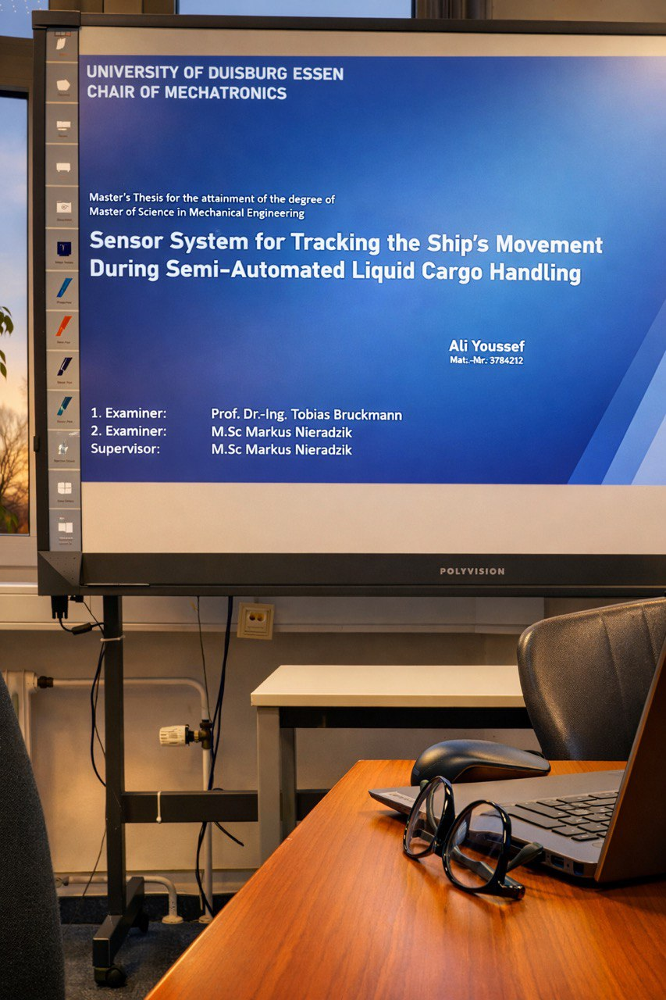

Anagenisis - Ana
Bridging the gap between theory and deployment, this project leverages Gazebo and custom ROS 2 nodes to demonstrate core autonomy concepts. From multi-sensor fusion and SLAM to vision-guided control, the system is architected to translate abstract control theory into high-impact educational content and visual demonstrations.
ZSL Autonomous Ships
Design and development of four autonomous model ships used as educational platforms for mechatronics students.

NOVA Research Vessel
Built the data infrastructure and sensor suite for an autonomous inland shipping research vessel, focusing on real-time visualization.

Maritime Cobot Fusion
Sensor integration system providing real-time ship pose data for automated liquid cargo handling (Cobotank).